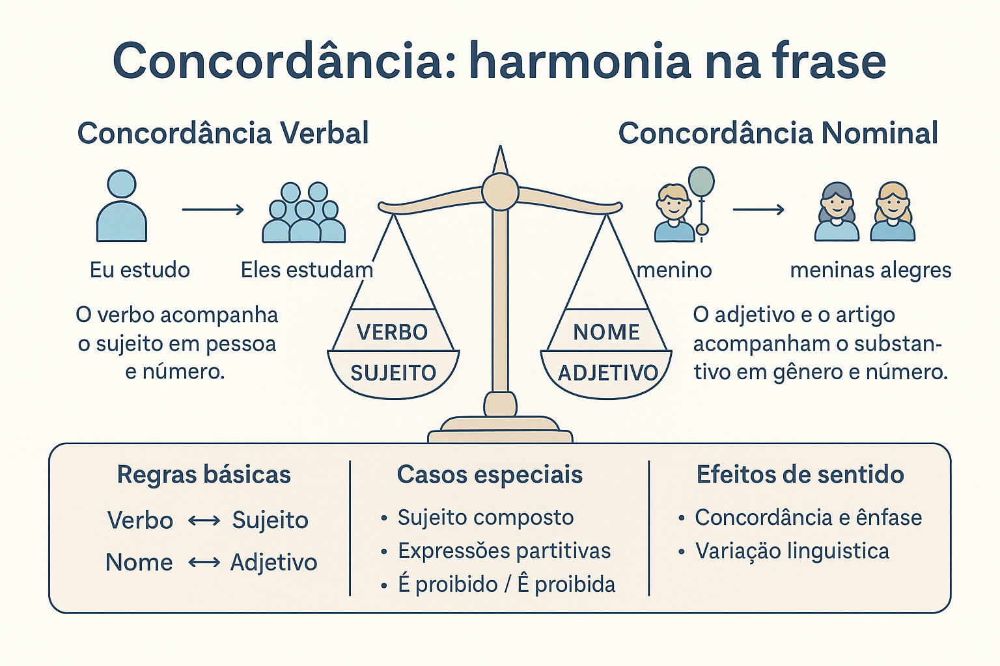

Concordância Verbal e Nominal na Construção do Sentido
A concordância é um dos princípios fundamentais da sintaxe, pois garante harmonia e coerência entre os elementos de uma oração. Quando dizemos que as palavras “concordam” entre si, estamos afirmando que elas se ajustam em número e pessoa (no caso dos verbos) ou em gênero e número (no caso dos nomes), de modo que a frase soe natural e gramaticalmente correta. Mais do que uma questão de forma, a concordância é também um instrumento de clareza e expressividade na linguagem.
O que é concordância verbal
A concordância verbal estabelece que o verbo deve variar de acordo com o sujeito, acompanhando-o em número (singular ou plural) e pessoa (1ª, 2ª ou 3ª). Essa relação sintática assegura que o verbo “se encaixe” ao sujeito, revelando quem pratica a ação e quantos são.
Exemplos simples:
- Eu estudo todos os dias. → sujeito na 1ª pessoa do singular.
- Nós estudamos juntos. → sujeito na 1ª pessoa do plural.
- Os alunos chegaram cedo. → sujeito plural, verbo também no plural.
Casos especiais de concordância verbal
Embora as regras básicas sejam simples, a língua portuguesa apresenta situações em que a concordância verbal permite variações, principalmente por questões de estilo, ênfase ou concordância ideológica:
- Sujeito composto: quando o sujeito vem antes do verbo, este vai ao plural (Pedro e Ana saíram); quando o sujeito vem depois, pode haver flexão no singular ou plural (Chegou / chegaram Pedro e Ana).
- Expressões partitivas: o verbo pode concordar com o núcleo ou com o complemento (A maioria dos alunos veio / vieram).
- Pronome “quem”: o verbo pode ficar na 3ª pessoa do singular ou concordar com o antecedente (Fui eu quem fiz / fez).
- Expressões de tratamento: o verbo concorda com a ideia de respeito, sempre na 3ª pessoa (Vossa Excelência chegou).
O que é concordância nominal
A concordância nominal regula a harmonia entre os substantivos e os elementos que os acompanham — adjetivos, pronomes, artigos e numerais. Assim, o adjetivo deve variar em gênero e número de acordo com o substantivo a que se refere.
Exemplos:
- O menino alegre — artigo e adjetivo no masculino singular.
- As meninas alegres — artigo e adjetivo no feminino plural.
Casos especiais de concordância nominal
- Adjetivo anteposto a dois substantivos: pode concordar com o mais próximo ou ir para o plural (Bela alma e coração / Bela alma e belo coração).
- Adjetivo posposto: concorda com o conjunto (Alma e coração puros).
- Locuções do tipo “é proibido”, “é necessário”, “é bom”: variam se o substantivo vier determinado (É proibida a entrada / É proibido entrar).
Concordância e construção de sentido
A concordância não serve apenas para “obedecer à gramática”; ela afeta diretamente o sentido e o tom de uma frase. Quando o autor opta por uma concordância singular em vez de plural, ou vice-versa, pode estar destacando um elemento ou reforçando uma ideia de coletividade.
Compare:
- Chegou Pedro e Ana. → foco na ação de chegar, vista como um todo.
- Chegaram Pedro e Ana. → destaque para os dois sujeitos de forma igual.
Além disso, as variações de concordância podem expressar informalidade, regionalismo ou até identidade sociocultural. É comum, por exemplo, na linguagem oral popular, o uso de estruturas reduzidas (a gente vamos, os menino estudou), que fazem parte da diversidade linguística e não devem ser tratadas apenas como “erro”, mas como manifestações legítimas da fala cotidiana.
Concordância e variação linguística
A escola deve ensinar a norma-padrão sem negar as formas populares e regionais da língua. Trabalhar a concordância é também discutir variação e adequação linguística: entender que cada contexto exige um registro diferente — o da conversa, o da redação, o da literatura.
Ensinar concordância, portanto, é muito mais do que ensinar regras: é ensinar como a estrutura das frases revela intenções, estilos e identidades linguísticas.
Conclusão
A concordância verbal e nominal é um elemento de sintaxe que ultrapassa o campo da correção gramatical. Ela é uma ferramenta de clareza, coesão e expressão. Compreender como as palavras se ajustam umas às outras é compreender, também, como o sentido se constrói nas frases — e, por isso, deve ser trabalhada de forma contextualizada, viva e significativa nas aulas de língua portuguesa.